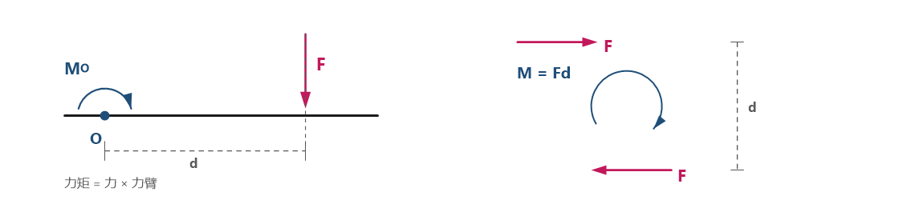
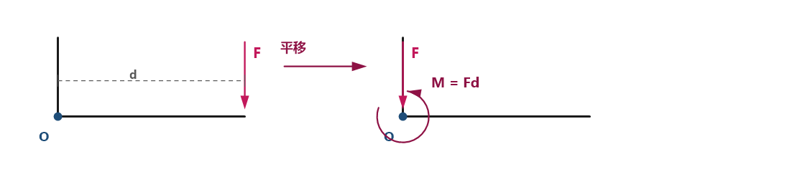
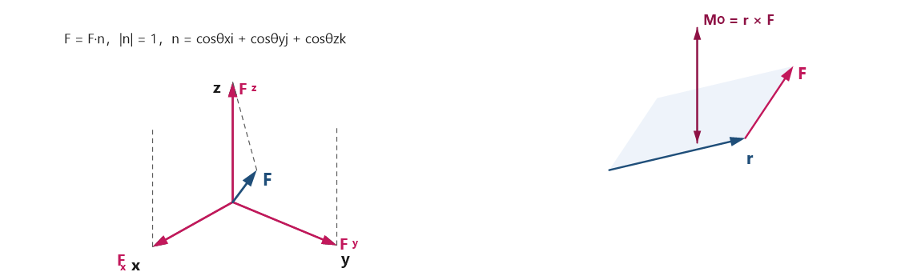
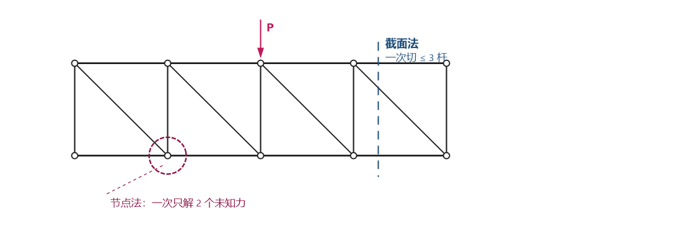
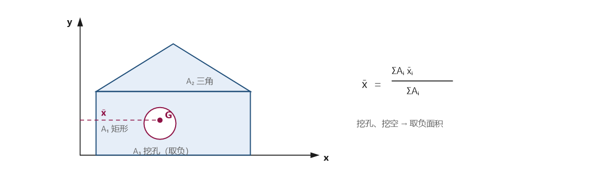
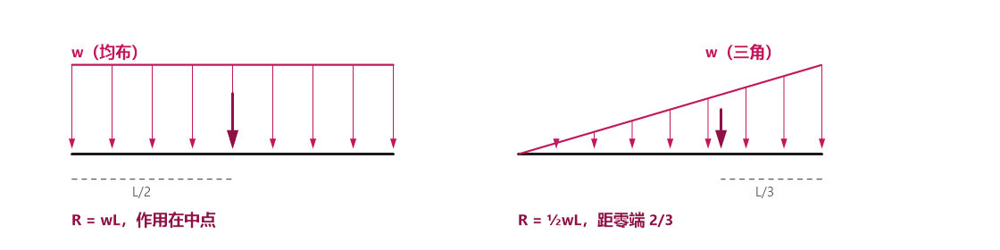
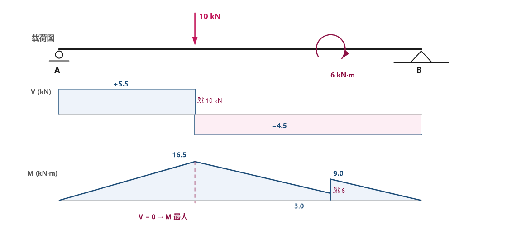
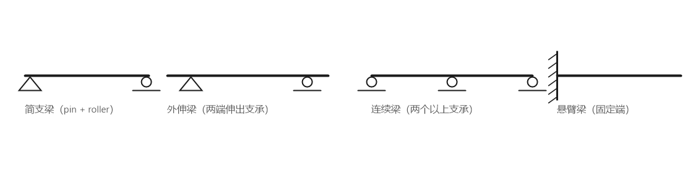

1一、静力学基础（L1）
1.1 基本概念
刚体（rigid body）与质点（particle）：刚体尺寸形状不变，只关心外效应；质点有质量无尺寸，不涉及转动。
- 牛顿三定律：惯性；F = ma；作用与反作用（等值、反向、共线）。
- 向量分类：自由向量、滑移向量（可传性原理）、固定向量。
1.2 单位与量纲
SI：力 N = kg·m/s2，g = 9.806 65 m/s2 ｜ US：力 lb，质量 slug = lb·s2/ft，g = 32.174 ft/s2
量纲齐性是最快的检错工具：方程两边逐项量纲必须相同。它能立刻发现错误，但不能证明方程正确。
T = C La mb gc ⟹ M0L0T1 ⟹ a = ½，c = −½，b = 0 ⟹ T = 2π√(L/g)
单摆这个例子说明：量纲分析能“逼出”函数形式，只差一个无量纲常数 2π。
1.3 万有引力与重量
F = G m1m2 / r2， G = 6.673×10−11 m3/(kg·s2)， W = m g
1.4 有效数字与解题六步
- 有效数字：答案首位为 1 时写 4 位，为 2–9 时写 3 位；中间计算保留全精度，只在结果处圆整。
- 解题六步：明确已知与未知 → 画完整受力图 → 选坐标系 → 写平衡方程 → 方程数 = 未知数 → 求解并检查。
2二、力系（L2）
2.1 力与力的等效
力是固定向量（大小、方向、作用点）。对刚体只需考虑外效应，因此力可以沿作用线滑移——这就是可传性原理。
汇交力系用平行四边形法则合成；平行力系加一对等值反向共线力，转化成汇交问题。

图 1 力矩 M = F·d 与力偶 M = Fd（力偶是自由矢量，与矩心无关）
2.2 分量与投影
分量沿任意两根轴分解，服从平行四边形法则；投影是垂直落影。只有两轴正交时，两者才相等——这是最常混淆的一点。
F = Fx i + Fy j， F = √(Fx2 + Fy2)， tan θ = Fy / Fx
2.3 力矩
MO = F d = F r sin α， 矢量式 MO = r × F
CCW（逆时针）取正。r 从矩心指向作用线上任意一点；叉乘顺序不能颠倒。
Varignon 定理：力对某点的矩等于其各分量对同一点的矩之和。斜力拆成水平与竖直后，力臂往往一眼可见。
2.4 力偶
M = F d， 与矩心无关；只要 Fd 相同、方向相同，任意平行平面上的力偶都等效。
2.5 力–偶系统
把力从一个位置平移到另一个位置时，需要补上一个力偶，其大小等于原力对新点的矩。

图 2 力平移 → 等效力 + 力偶 M = Fd（力的外效应完全不变）
典型用途：把偏心的齿轮力、缆绳力平移到轴线上，再与轴的反力一起做平衡。
3三、平面力系的合成与平衡（L3）
3.1 合力与作用线
三步：把各力平移到参考点 O（每移一个力补一个力偶 M = r × F）→ 求 R 与 MO → 由 r × R = MO 反求作用线位置。
R = ΣF， MO = ΣMO， r × R = MO
课堂例题 2/9：四力一偶合成后作用线为 132.4x − 66.9y = −237，令 y = 0 得 x = −1.792 m。
3.2 自由体图（FBD）
四步：选对象并隔离 → 画外边界 → 画全部外力（已知力与未知约束力）→ 标坐标轴与尺寸。
- 约束建模：绳索沿绳拉、光滑面法向、辊轴一个法向、铰链两个分量、固定端两力一矩。
3.3 平衡条件
ΣFx = 0， ΣFy = 0， ΣMO = 0
替代形式：一矩两力式（ΣMA = ΣMB = 0，ΣFx = 0，且 AB 不垂直于 x 轴）；三矩式（三个矩心不共线）。
二力杆：等值、反向、共线，方向沿两铰连线。三力杆：三力必汇交于一点，或相互平行。抓住这两条，方程能少一半。
3.4 静定与约束
未知数个数等于独立方程数 → 静定；多于 → 超静定（次数 = 多余约束数）；反力汇交或平行 → 约束不完全，几何不稳定。
4四、三维力系（L4）
4.1 方向余弦与分量
F = F n， n = cos θx i + cos θy j + cos θz k， l2 + m2 + n2 = 1
两种给法：给两点 → 先写位置矢量再除以长度；给两个角 → 先得 Fxy = F cos φ、Fz = F sin φ，再把 Fxy 分到 x、y。
4.2 点积与投影
P · Q = P Q cos θ， 标量投影 Fn = F · n， 矢量投影 Fn = (F · n) n

图 3 三维分量（左）与力矩 M = r × F（右）
4.3 三维力矩与轴矩
MO = r × F， 对任意轴 λ 的矩 Mλ = (r × F) · n
求轴矩时先算 MO 再向轴投影，比硬找力臂快得多；混合积 (P × Q)·R 可以循环换序。
4.4 合成与力螺旋
若 MO 与 R 不垂直，把它拆成平行分量 M1 = (MO · n)n 与垂直分量；垂直分量可由移动 R 抵消，剩下平行分量 → 一个力加一个沿其作用线的力偶，称为力螺旋（wrench）。
R = ΣF， MO = ΣMO， r × R + M1n = MO
5五、三维平衡（L5）
ΣF = 0（三个分量）， ΣMO = 0（三个分量） ⟹ 最多 6 个独立方程
- 支座建模：球铰 3 个分量；止推轴承 3 个分量；径向轴承 2 个分量（无轴向力矩）；缆绳 1 个；光滑面 1 个。
- 约束充分性：完全固定（静定）、多余约束（超静定）、不完全固定（反力汇交或平行 → 失稳）。
技巧：取矩轴穿过未知力最多的那条线，一个轴矩方程就能解出一个未知量，避免 6×6 联立。
6六、平面桁架（L6）
6.1 基本假设与判定
节点视为光滑铰、载荷只作用在节点、杆重忽略 → 每根杆都是二力杆。基本单元是三角形，简单桁架几何不变。
内部静定判据： m + 3 = 2j （m 杆数，j 节点数）

图 4 同一榀桁架的两种解法：圈住的节点用节点法，虚线处用截面法
6.2 节点法
每节点只有两个方程，所以一次最多解两个未知力。从“有已知载荷、最多两根未知杆”的节点开始，逐个推进。
约定：拉力离开节点、压力指向节点。一律先假设受拉，算出负号即为压。
- 零杆：两杆不共线且节点无外载 → 两杆皆零；三杆中两杆共线且无外载 → 第三杆为零杆。
6.3 截面法
一次最多切三根杆（因为只有三个方程），取任一侧做整体平衡。矩心取在另外两根被切杆的交点，方程里就只剩目标杆。
7七、框架、机器与形心（L7）
7.1 框架与机器
框架（frame）刚性、不可动：先求整体外部反力，再拆件求内部力。机器（machine）含运动部件：先拆件求内部力，最后求外部反力。
多力杆两端的作用力不一定沿杆方向；只有二力杆才能沿两铰连线假设——这是本章最易错的判断。
课堂例题 4/6：400 kg 载荷，AB 为二力杆，FCD = 13.08 kN，另一半 6.58 kN。
7.2 重心、质心与形心
x = ∫x dW / ∫dW （重心）；把 W 换成 m 得质心；换成 L、A、V 得线、面、体形心
均匀场下三者重合。组合体用表格法：

图 5 组合形心：矩形 + 三角形 减去圆孔，挖孔按负面积处理
积分技巧：取一阶微元（细竖条 dA = y dx、薄圆盘 dV = πr² dx）以减少重积分；先定微元、再定上下限；对称性可以先把某个坐标定为 0。
8八、梁的内力（L8）
8.1 分布载荷的等效
合力等于载荷图的面积，作用线过该面积的形心。均布→中点；三角形→距零端 2/3（距峰值端 1/3）。

图 6 均布与三角载荷的合力位置
8.2 三个内力与符号
切开后截面上有轴力 N、剪力 V、弯矩 M（三维还有扭矩 T）。平面梁只需 V、M。
- 符号：V 使微段顺时针转（左段右面朝下）为正；M 使梁下凹、下缘受拉为正。
8.3 截面法求内力的三条式子
V = Σ（切口左侧各力的竖向分量，↑ 为正）
M = Σ (x − xi) Fyi − Σ Ci （力矩心取切口，力偶逆时针为正）
9九、剪力弯矩图（L9）
9.1 微分关系
dV/dx = −w （w 向下为正）， dM/dx = V
由此得到图形规则：无载荷段 V 水平、M 斜线；均布段 V 斜线、M 抛物线（开口朝载荷方向）；线性载荷段 M 为三次曲线。
- 集中力：V 突变 = 该力，M 斜率突变但数值连续。
- 集中力偶：M 突变 = 该力偶，V 不变。
- V = 0 处 M 取极值；面积法：ΔV = −载荷面积，ΔM = V 图面积。

图 7 载荷图 / V 图 / M 图三图对齐；注意 V 的跳变、M 的跳变与极值位置
9.2 画图规范（考试扣分点）
三张图自上而下对齐；每个关键点标数值与单位；突变位置必须标出。缺单位、不对齐、漏标极值都会被扣分。
10附录 A 作业题型对照
- HW1：量纲分析（θ = TL/JG 求 J 的量纲）、力的矩、等效力–偶系统、四发动机推力合力、平行力系合力过 y 轴某点 ⟵ L1–L3
- HW2：三维方向角、力沿某线投影、对轴取矩、力系合成为单力 + 力偶、wrench 与一般力–偶系统的区别 ⟵ L4
- HW3：二维平衡、梁的支座反力、弹簧 + 滑轮、四腿桌缺一条腿、三维吊臂（球铰 + 三缆） ⟵ L3、L5
- HW4：节点法、截面法、交叉杆截面法、桁架理想化假设 ⟵ L6
- HW5：组合体质心、半球挖方孔求 z̄ 最大、钳子夹紧力、脚踏气泵、三杆框架反力与销钉力 ⟵ L7
11附录 B 高频错误
- 把分量当投影用；力矩力臂量错；受力图漏约束力、把内力当外力。
- 二力杆与多力杆搞混；节点法没从两未知点起步；截面法一次切超过三根杆。
- 梁的 V、M 符号反了；把集中力偶当成集中力处理；画完图不做 dM/dx = V 的自检。
- 单位混用（N 与 kN、ft 与 in、lb 与 slug）；结果不写单位、有效数字不合约定。
12附录 C 公式速查
MO = r × F， MO = F d， 力偶 M = F d
Mλ = (r × F) · n， 投影 Fn = F · n
R = ΣF， r × R = MO， 力螺旋 M1 = (MO · n)n
二维 3 个方程；三维 6 个方程；桁架 m + 3 = 2j
形心 x = ΣAixi / ΣAi（挖孔取负）
梁 dV/dx = −w，dM/dx = V， ΔM = V 图面积
均布 R = wL 于中点；三角 R = ½wL 距零端 2/3
13附录 D 图形速记（V–M 图）
无载荷段：V 为水平线，M 为斜直线
均布载荷：V 为斜线，M 为抛物线（开口朝载荷方向）
线性载荷：V 为抛物线，M 为三次曲线
集中力处：V 跳变 = 该力，M 连续但折一个角
集中力偶处：M 跳变 = 该力偶，V 不受影响
V = 0 处：M 取极值（常为最大弯矩）
14附录 E 梁的四种支承形式

图 8 支座形式不同 → 反力个数与静定性不同（悬臂梁的固定端提供两力一矩）
15附录 F 常用换算
g = 9.806 m/s² = 32.17 ft/s²； 1 kip = 1000 lb
1 lb = 4.448 N； 1 kN = 224.8 lb； 1 slug = 14.59 kg
1 ft = 0.3048 m； 1 in = 25.4 mm； 1 psi = 6.895 kPa